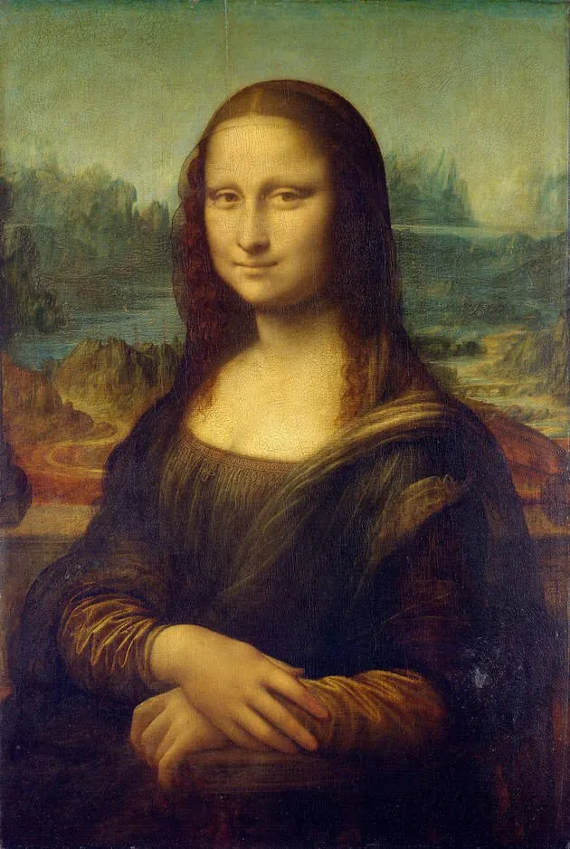
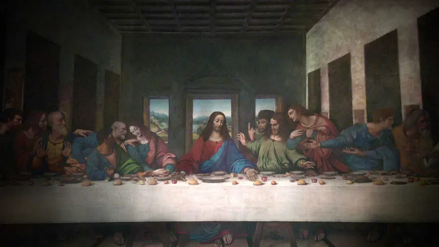
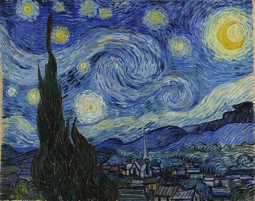
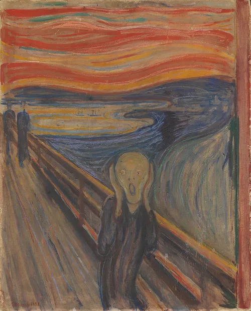
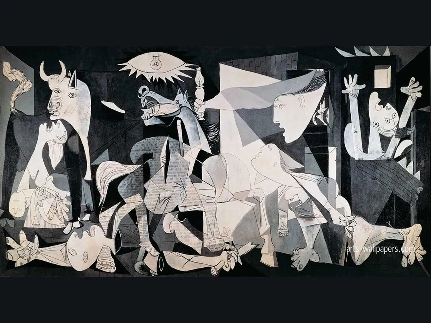
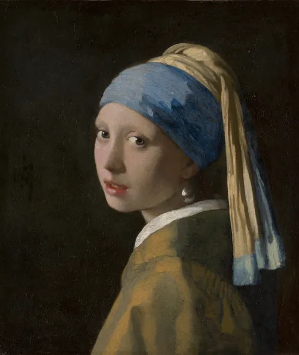
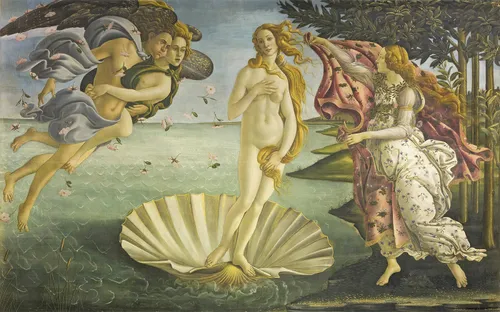
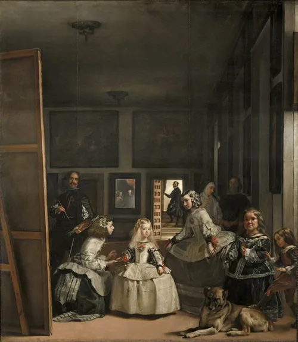

La Mona Lisa
Leonardo Da Vinci (1504)
Se cree que la modelo de la pintura es Lisa Gherardini, la esposa del comerciante de Florencia Francesco del Giocondo, pero los expertos no están seguros. Representaba una innovación en el arte: la pintura es el primer retrato italiano conocido que se enfoca tan de cerca en la modelo en un retrato de medio cuerpo, según el Louvre, donde se instaló por primera vez en 1804.

La Ultima Cena
Leonardo Da Vinci (1495-1498)
Pintado en una época en la que las imágenes religiosas todavía eran un tema artístico dominante, "La Última Cena" representa la última vez que Jesús partió el pan con sus discípulos antes de su crucifixión. La pintura es en realidad un gran fresco: mide 4,6 metros de alto y 8,8 metros de ancho, lo que lo convierte en una vista memorable.

La Noche Estrellada
Vincent van Gogh (1889)
La pintura comparativamente abstracta es el ejemplo característico del uso innovador y audaz de pinceladas gruesas de van Gogh. Los llamativos azules y amarillos de la pintura y la atmósfera de ensueño y remolinos han intrigado a los amantes del arte durante décadas.

El Grito
Edvard Munch (1893)
Primero lo primero: "El Grito" no es una sola obra de arte. Según el blog del Museo Británico, hay dos pinturas, dos pasteles y luego un número no especificado de impresiones. Las pinturas residen en el Museo Nacional y el Museo Munch, y en 2012, uno de los pasteles se vendió por casi 120 millones de dólares en una subasta. Al igual que el caso de "Mona Lisa", los atrevidos robos (1994 y 2004) de las dos versiones de pintura de "El Grito" ayudaron a elevar la conciencia del público sobre las obras de arte. (Ambos fueron finalmente encontrados).

La Guernica
Pablo Picasso (1937)
Esta es la pintura más reciente en esta lista, y representa el bombardeo aéreo alemán de la ciudad de Guernica en la región vasca durante la guerra civil española. La pintura tiene ese estilo distintivo de Picasso, y su examen inquebrantable de los horrores de la guerra la convirtió en una parte esencial de la cultura y la historia del siglo XX.

El Beso
Gustav Klimt (1907-1908)
Del "Período Dorado" de Klimt, las influencias artísticas bizantinas se pueden ver en las túnicas altamente decorativas que usa la apasionada pareja de tamaño natural. El museo Upper Belvedere dice que con "El beso", Klimt hace una "declaración alegórica general sobre el amor como el corazón de la existencia humana". Dado su atractivo magnético, parece que la gente está de acuerdo.

La Joven De La Perla
Johannes Vermeer (1664)
Este intrigante favorito a menudo se compara con la "Mona Lisa". Además de las diferencias estilísticas, técnicamente "Girl With a Pearl Earring" no es ni siquiera un retrato, sino un "tronie", una palabra holandesa para una pintura de una figura imaginaria con rasgos exagerados. La obra maestra del óleo sobre lienzo es brillante en su simplicidad. La niña, que llevaba un turbante azul y dorado y un arete de perlas de gran tamaño, es todo el foco con solo un fondo oscuro detrás de ella.

El Nacimiento De Venus
Sandro Botticelli (1485-1486)
'El nacimiento de Venus', es la pintura más antigua en el top 10 y compite con "El beso" entre los más sensuales fue probablemente comisionado por un miembro de la familia Medici, rica y amante del arte, que gobernó Florencia y las áreas cercanas durante siglos. Al casarse con un renovado interés en la cultura griega clásica con el estilo del Renacimiento temprano, Botticelli crea una figura inolvidable con la Diosa del Amor que emerge de una enorme concha de vieira.
